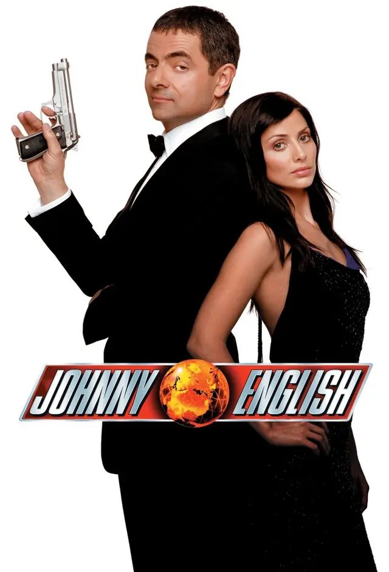
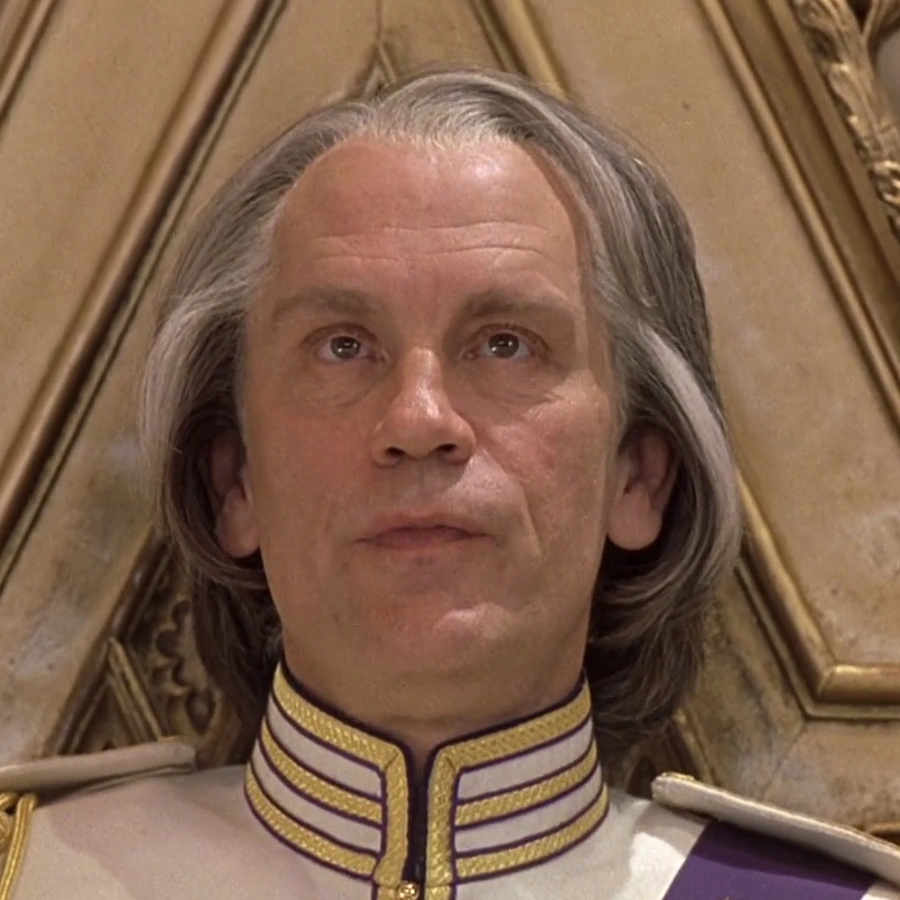
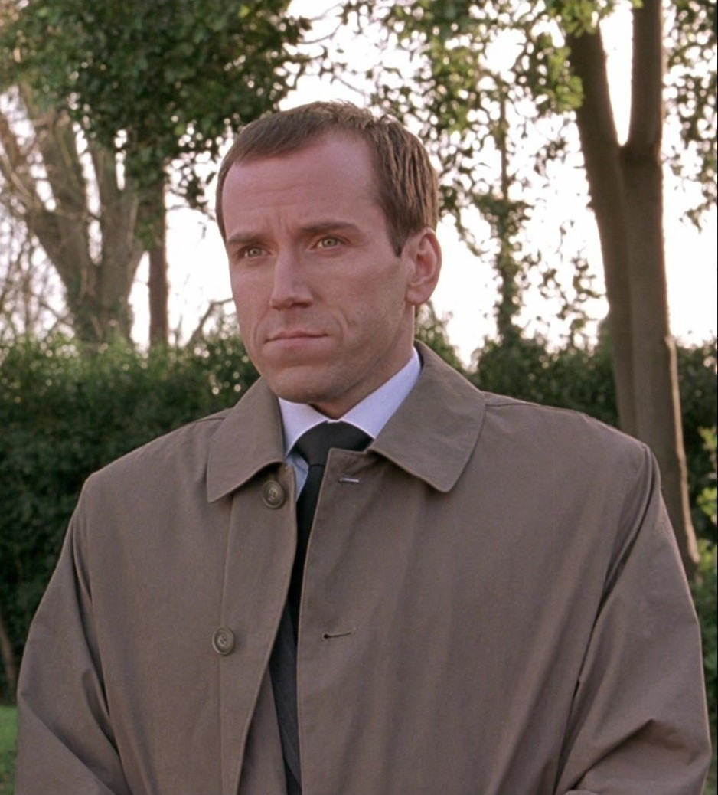
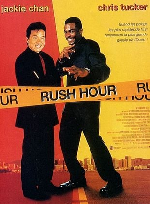

1. Johnny English
Présentation
Johnny English est une comédie d’action sortie en 2003 qui parodie ouvertement les films d’espionnage à la
James Bond.
Le film met en scène un agent secret persuadé d’être un professionnel d’élite, alors qu’il accumule les
maladresses et les décisions absurdes.
L’humour repose sur le contraste entre la confiance excessive du personnage et sa totale incompétence,
créant un décalage comique constant.
Grâce à son ton léger, son rythme dynamique et son humour très british, le film est devenu une référence
dans la comédie d’action familiale.
Il s’appuie également sur la gestuelle unique de Rowan Atkinson, capable de rendre hilarante la moindre
situation.
Personnages principaux
- Johnny English : L’agent secret maladroit et prétentieux, interprété par Rowan Atkinson. Il est convaincu d’être un espion de classe mondiale, mais ses actions sont souvent contre-productives
- Bough : Un agent de la MI6, joué par Hugh Laurie. Il est sérieux et compétent, mais souvent en désaccord avec les méthodes de Johnny English
- Pascal Sauvage : Le méchant du film, joué par John Malkovich. Il est un milliardaire excentrique qui cherche à usurper le trône britannique
- Kate Sumner : Une analyste de la MI7, interprétée par Natalie Imbruglia. Elle est intelligente et compétente, mais se retrouve souvent frustrée par les méthodes de Johnny English
Scènes cultes
- La scène où il tire accidentellement sur une secrétaire avec un stylo-missile dans le bureau du MI7
- La séquence dans laquelle Johnny English essaie de s’infiltrer dans un bâtiment sécurisé sauf qu'il se trompe de batiment
- Le moment où Johnny English se retrouve debout sur un cercueil pendant une cérémonie d'enterrement, pensant que celui ci etait un faux
- La scène finale où Johnny English affronte Pascal Sauvage, utilisant des méthodes totalement absurdes pour tenter de sauver la situation.
Particularités du film
Le film se distingue par son mélange unique d’action et de comédie, avec un humour très visuel et des gags
récurrents.
Il parodie les clichés du genre espionnage tout en offrant une histoire divertissante et accessible à tous
les publics.
La performance de Rowan Atkinson est particulièrement remarquable, apportant une dimension comique inégalée
au personnage de Johnny English.
Le film a également été salué pour sa capacité à faire rire tout en proposant des scènes d’action bien
chorégraphiées, ce qui en fait un classique du genre.
Images



Liens externes
2. Rush Hour
Présentation
Rush Hour est une comédie d’action sortie en 1998 qui met en scène un duo improbable formé par un détective
de Hong Kong et un policier de Los Angeles.
Le film repose sur le contraste culturel entre les deux protagonistes, ainsi que sur leur dynamique comique.
L’humour est souvent basé sur les malentendus culturels, les différences de méthodes d’enquête et les
situations absurdes dans lesquelles ils se retrouvent.
Grâce à son mélange d’action spectaculaire et de comédie légère, Rush Hour est devenu un succès mondial et a
engendré plusieurs suites.
Personnages principaux
- Détective Inspecteur Lee : Un détective de Hong Kong, interprété par Jackie Chan. Il est compétent, discipliné et possède des compétences en arts martiaux exceptionnelles
- Détective James Carter : Un policier de Los Angeles, joué par Chris Tucker. Il est exubérant, bavard et souvent maladroit, mais il a un grand cœur
- Thomas Griffin/Juntao : Le méchant du film, joué par Tom Wilkinson. Il est un trafiquant d’armes international qui kidnappe la fille d’un diplomate indien
Scènes cultes
- La scène d’ouverture où Lee et Carter se rencontrent pour la première fois à l’aéroport, avec des échanges de répliques hilarants
- La séquence dans laquelle Lee et Carter tentent de s’infiltrer dans un club de strip-tease pour trouver des indices, ce qui conduit à une série de gags comiques
- Le moment où Lee et Carter se retrouvent coincés dans un ascenseur avec des criminels, créant une situation tendue mais comique
- La scène finale où Lee et Carter affrontent les méchants dans un entrepôt, combinant des scènes d’action intenses avec des moments de comédie
Particularités du film
Rush Hour se distingue par son mélange réussi d’action et de comédie, avec une chimie indéniable entre les
deux acteurs principaux.
Le film parodie les clichés du genre buddy cop tout en offrant une histoire divertissante et accessible à un
large public.
Les scènes d’action sont bien chorégraphiées, mettant en valeur les compétences de Jackie Chan, tandis que
l’humour de Chris Tucker apporte une légèreté bienvenue.
Rush Hour a également été salué pour sa capacité à aborder les différences culturelles de manière
humoristique, tout en proposant une histoire captivante.
Images
